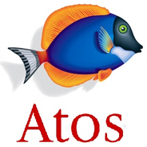

Experienced Senior DevOps Engineer and teamlead with 23 years in the telecoms industry,
specialising in billing systems and dynamic tariffing solutions. Skilled in Unix,
Bash, Postgres, and MongoDB with a background in C and Pascal programming. Passionate
about integrating modern technologies to optimise system performance and enhance user
experiences.
Education
Senior Certificate – Riebeeck High School | Johannesburg | South Africa (1988)
Subjects: English, Afrikaans, Math, Science, Biology, Accounting
Lead the support of billing systems and dynamic tariffing solutions.
Managed Postgres and MongoDB databases, ensuring data integrity and optimal performance.
Integration and deployment of in-house developed software solutiuons.
Collaborated with cross-functional teams to deliver robust and scalable software solutions.
Senior Support Engineer | Digitata Ltd., 2012 - 2017
Extensive experience in Linux (SUSE, REDHAT, ROCKY), Postgres, MongoDB, SQL, and Bash
scripting, I deliver robust support and solutions for clients across Africa and Asia.
Expertise in managing and optimising SUSE, REDHAT, and ROCKY servers.
Skilled in Postgres and MongoDB administration, and SQL for data management.
Advanced Bash scripting for automation and system enhancement.
Provide top-tier support and issue resolution for multi-regional clients.
Lead both in-country and remote deployments, ensuring seamless system integration.
Work closely with diverse teams to deliver comprehensive and innovative solutions.
Solutions Software Engineer | Balance Your Debt Systems (Pty) Ltd., 2009 - 2011
Responsible for the UNIX server maintenance, support and backup; Ubuntu, Debian, Redhat
Linux.
Drafting and compiling and reviewing of Functional Specifications and High Level Design
Documentation.
UNIX BASH/Ksh development of crucial automated server processes used in the business.
Compilation of weekly shipments with new updates and bug fixes.
Analysing user requirements and continuously researching, designing and writing new software modules.
Identifying and fixing of defects and performance issues.
Remote software and server support for the company as per criteria set out in the Service Level
Agreement.
Pascal Programming used in payment files generation for bulk bank deductions via a
certified Payment Distribution Agent (PDA).
Senior BSCS Support Engineer and Developer | ATOS Origin, 2000 - 2009

Responsible for the remote and on-site support as per the Service Level Agreement for local
and international BSCS customers.
Implementation, configuration and testing of complete billing systems for Clients.
Management, identifying and fixing of defects.
Maintenance of networking systems and upgrading of computer systems or offering
recommendations on upgrades needed.
Responsible for the Centura online development for BSCS.
PLSQL and UNIX scripting.
ORACLE 8, 9, 10G UNIX setup, installation and maintenance.
UNIX server maintenance and backups; HP/UX, True64, Sun Solaris, Linux RedHat, Gentoo Linux.
Earlier Career
LAN / System Administrator | Leeudoorn Goldfields South Africa, 1996 - 2000
Create and optimise automated trading strategies for Forex markets using MQL4
Analysed market trends and implemented trading algorithms to maximise profit potential.
design and develop custom market indicators to enhance trading strategies in both Forex and
cryptocurrency markets.
Skills
UNIX (True64, Solaris, HP/UX, Linux)
PostgreSQL
VMWare
Bash, Ksh
HTML
C Programming
Pascal Programming
MongoDB
PL/SQL
Python
MQL4 Programming
Pine Programming
Ansible
Microsoft Office Suite (Excel, Outlook, PowerPoint, Word, Access)
Achievements
Developed a comprehensive Linux ISO deployment solution that fully installs the operating
system, datbase, and applications in offline customer environments without internet access.